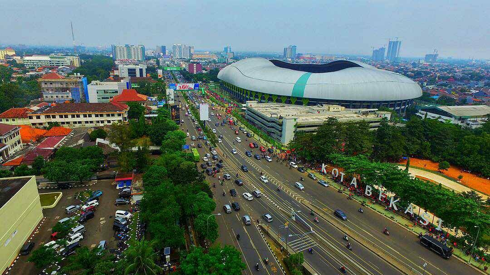

Kota Bekasi
Kota Bekasi terletak di sebelah timur Jakarta, Provinsi Jawa Barat. Kota ini memiliki potensi besar dari segi ekonomi dan pariwisata. Beberapa potensi kota Bekasi antara lain kawasan industri yang menarik banyak investor dan pusat perbelanjaan besar yang memberikan kontribusi besar bagi perekonomian kota. Selain itu, kota Bekasi juga memiliki objek wisata sejarah dan kuliner yang menarik bagi wisatawan. Untuk masa depan, kota Bekasi memiliki rencana pengembangan yang ambisius, seperti pembangunan transportasi massal yang lebih modern, pengembangan kawasan industri, dan pengembangan pariwisata. Dengan potensi dan rencana pengembangan yang ada, kota Bekasi memiliki masa depan yang cerah.
Kembali